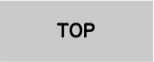
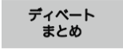
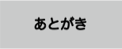
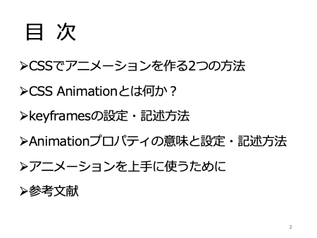

卒業研究課題








| スライド | 説明文 |
|---|---|
 |
ゼミナール中島 卒業研究課題 CSSアニメーション よろしく願いします。 |
|  | 今回の内容です。
スライドに示す5つ。 １）CSSでアニメーションを作る2つの方法について ２）SCCアニメーションとは何か？ ３）アニメーションの開始から終了まで、どのように変化させるかを指定するキーフレイムの設定、記述方法。 ４）アニメーションの細かい動きを指定するアニメーションプロパティの意味と設定、記述方法。 ５）アニメーションを上手に使うためのポイントをお話させていただきます。 |
| まず、CSSでアニメーションを作る2つの方法についてですが、CSSでアニメーションを作る方法は、CSSトランジッションとCSSアニメーションの2つがあります。 トランジッションは、何か、きっかけを与えることで動作するアニメーションで、例えば、ページ上にメニューと書かれている部分にマウスを持っていくと、詳細なメニュー画面が滑り出てくるようなアニメーションを言います。 それに対し、アニメーションは、ページを開いた瞬間から動作するもので、アニメーションの開始から終了まで、どのように変化させるかを指定するキーフレイムを適用し、アニメーションプロパティで細かい動きを設定したアニメーションを実装したものをいいます。 |
|
 |
今回は、このアニメーションについて詳しく説明する内容となっています。 |
| このcssアニメーションとは、cssのスタイルを別の設定に変化させることをいいます。 例えば、要素を回転させたり、伸縮、拡張させたり、色を変えたり、透過させたり移動させたり・・・などなど これを実行させるためには２種類の要素を構成する必要があり、1つ目が、アニメーションのはじめと終わりのスタイルを設定するキーフレイムというもの。 もちろん、はじめと終わりだけではなく、途中の通過ごとにスタイルを変更させることも出来ます。 もう一つが、キーフレームで設定したアニメーションについて詳細な設定を記述するスタイルです。 この2つが揃ってCssアニメーションは表現できることとなります。 |
|
 |
この2つの要素はどこに記述するのか？ Css二メーションと言うくらいですので、ヘッド内のスタイルタグの中ピンクの矢印で示した部分に記述します。 |
 |
どこに記述するか？わかったところで、次はキーフレームの設定についてです。 何度も出てきている言葉ですが、キーフレームとは、アニメーション開始から終了までどのような動きや変化をするか？を指定します。 大変大まかな設定です・・・。 このキーフレームは＠規則ですので、＠キーフレームから書き出し、波かっこの中に設定を記述します。 |
 |
＠キーフレームのすぐ後には、このアニメーションの名前を書きます。 任意の名前でのちに説明するアニメーションプロパティと紐付けするための名前です。 |
| Cssプロパティ コロン 値 セミコロン では、色、背景色、横幅、高さなどのプロパティを記述し、値を変化させることで、拡大や縮小、透明や不透明など様々なアニメーションを指定します。 | |
 |
最後に、０％、１００％の部分ですが、これは０％はアニメーションの開始時のスタイルです。 ０％と書く代わりに、fromと書くこともあります。 １００％はアニメーションの終了時のスタイルです。 １００％と書く代わりに、toと書く場合もあります。 また、０〜１００％の間であれば、２５％、５０％、７５％など任意にポイントを追加できます。 |
 |
これでキーフレームの設定は記述完了です。 しかし、これだけでは、アニメーションは動きません。 開始から終了までのアニメーションを指定しただけにすぎません。 どの、アニメーションに適応するのか？ 適応したアニメーションはいつ開始されるのか？ 開始されてから終了するまでの時間は？ 繰り返しはするの？1回だけ？それとも、何回も繰り返すのか？ これらを設定するためには、アニメーションのプロパティを設定する必要があります。 次からアニメーションのプロパティについて説明します。 |
 |
アニメーションのプロイパティの設定を記述するには２通りの方法があります。 ①1つ1つのプロパティを記述する方法。 ②アニメーションと言う複数のプロパティの値をまとめて指定するプロパティで記述する方法。 です。 |
| ②の複数のプロパティの値をまとめて指定するプロパティの中身は、①で1つ1つ設定したプリパティの値のみを記述します。 ①でアニメーションネームの値をローテーションと記述した場合、②では、その値のローテーションのみを記述します。 |
|
 |
②の中では今まで説明した通りの順番で記述しなければならないわけではなく、順不同で記述可能です。 しかし、いくつかルールがあります。 アニメーションとして再生させるために、アニメーションネームとアニメーションデュレーションの2つは指定すること。 アニメーションネームの値が他のアニメーション・タイミング・ファンクションやアニメーション・ディレクションなどの値と同じにしないこと。 また、animation-durationとanimation-delayのプロパティは両方とも秒数で指定するため、最初に記述した秒数がanimation-durationで、次に記述した秒数がanimation-delayと解釈されることです。 |
 |
ここからプロパティの1つ1つを見ていきます。 最初はアニメーションネームです。 アニメーションの名前を指定します。 キーフレームで設定した名前を指定すると、キーフレームで設定した流れでアニメーションが動きます。 任意の文字字列で指定できますが、他のプロパティと同じ名前にはしないことが重要です。 |
 |
アニメーション・デュレーションは、アニメーションの開始から終了までの所要時間を指定します。 初期値が、０sで、s（秒）またはms（ミリ秒）で指定します。 2sであれば、2秒間で1回アニメーションを実行。 10sであれば、10秒間で1回のアニメーションを実行。 2msであれば2ミリ秒間で1回アニメーションを実行。となります。 つまり、ここで設定した秒数=キーフレイムで設定される100％ということです。 |
 |
アニメーション・タイミング・ファンクションは、アニメーションのイージング（速度の緩急ゆっくり始めるとか、終わりはゆっくりなど、）を指定します。 値は９個あり、初期値はイーズで、開始と終了は緩やかに変化します。 イーズイン・・・開始時、緩やかで、終了に近づくと早く変化する イーズアウト・・・開始時、早く変化し、終了に近づくと緩やかに変化しする。 イーズインアウト・・・開始と終了は緩やかに変化。 リニア・・・開始から終了まで一定に変化する ステップスタート・・・開始時に最終状態になる ステップエンド・・・終了時に最終状態になる ステップス・・・第1引数に指定した正数の段階で変化する。第2引数には start または end を指定する。start を指定すると、アニメーション開始時から変化する。 end を指定すると、アニメーション終了時に変化する。 キュービック・ベジェ という、３次ベジェ曲線で指定する方法もあります。 |
| アニメーション・ディレイは、アニメーションが開始する時間を指定します。 アニメーション・デュレーションのように、初期値が、０sで、s（秒）、またはms（ミリ秒）で指定します。 2sであれば、2秒後にアニメーションを実行。 10sであれば、10後にアニメーションを実行。 2msであれば2ミリ秒後にアニメーションを実行。 となります。 |
|
| アニメーション・イテレーション・カウントは、アニメーションの繰り返す回数を指定します。 初期値は１つまり1回のみの設定で、無限に繰り返したい場合は、インフィニット（無限）を指定します。 |
|
 |
アニメーション・ディレクションは、アニメーションの再生方向を指定します。 値は4つあり、初期値はノーマルで、順方向にアニメーションが再生されます。 他に、リバースは、逆方向のアニメーションが再生される。 オルタネットは、順方向と、逆方向のアニメーションを交互に繰り返して、再生される。 オルタネットリバースは、逆方向と順方向のアニメーションを交互に繰り返して再生されます。 順方向と逆方向について、補足ですが、開始０％から終了１００％に向かうのが順方向で、 終了１００％から開始０％向かうのが逆方向となります。 |
| アニメーション・フィル・モードは、アニメーション開始開始前と、開始後のスタイルを指定します。 値は4つあり、初期値はノンで、アニメーションで指定したスタイルはアニメションの開始前と終了後には適応されません。 他に、フォワード・・・アニメーション終了時のスタイルが終了後にも適応される。 バックワーズ・・・アニメーション開始時のスタイルが開始前にも適応される。 ボウズ・・・フォワードとバックワーズの両方が適応されるです。 |
|
 |
最初のスタイルが黒い四角だとします。 アニメーションで背景色を赤から青へ変化させるとすると、ノンとフォワードはアニメーションで指定した開始時のアニメーションが開始前には適応されないので、黒いままで開始すると、赤に変わります。 また、終了時にはいずれも青になりますが、のんの場合は、終了後にアニメーションの終了時のスタイルが適応されないので黒に戻り、フォワードは適応されるので青いままとなります。 バックワードと、ボウズは開始前のスタイルに、開始時のスタイルが適応されるので赤となり、終了後はバックワードは終了時のスタイルが適応されないので黒に戻ります。 ボウズはそのまま適応されるので青いままとなります。 |
 |
アニメーション・プレイ・ステートは、アニメーションの再生と停止を指定します。 初期値はランニングで、アニメーションが実行され、もう一つは、ポーズでアニメーションが停止します。 以上、8つのプロパティでアニメーションの詳細を決定します。 |
 |
実際にアニメーションを使う際には、アクセシビリティの４原則を念頭に、華やかさだけを求めたアニメーションで表現することは好ましくなくWebサイトを利用するすべての人が年齢・身体的制約、などに関係なくコンテンツが利用できるできるデザインを考える必要があります。 |
| 点滅を伴うアニメーションや、特定の種類の動きに対して、ないかしらの不調を訴えることもあります。 そのような場合には、アニメーションを停止したり、無効にしたりする仕組みリデュース・モーション・メディア・クエリを使用します。 |
|
| 最後に、cssでアニメーションを利用する利点ですが、以前は、JavaScriptでアニメーションは作られていましたが、今では、JavaScriptを知らなくても、cssがわかれば手軽に作製できるようになっています。 また、中程度以下のシステム負荷で良く動作し、ブラウザーがアニメーションの流れを制御し、パフォーマンスや効率を最適化もしてくれます。 さらに、複雑なUIを構築した時、制御をJavaScriptに、アニメーションをCSSに分離して記述することで、それぞれの管理が容易になります。 |
|
 |
まとめです。 CSSでアニメーションを作る2つの方法 CSS Animationとは何か？ Keyframesの設定・記述記述 Animationプロパティの意味と設定・記述方法 アニメーションを上手に使うためにをお話しさせていただきました。 ありがとぉございました。 |
 |
参考文献はこちらになります。 |